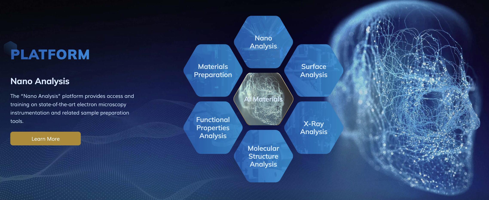
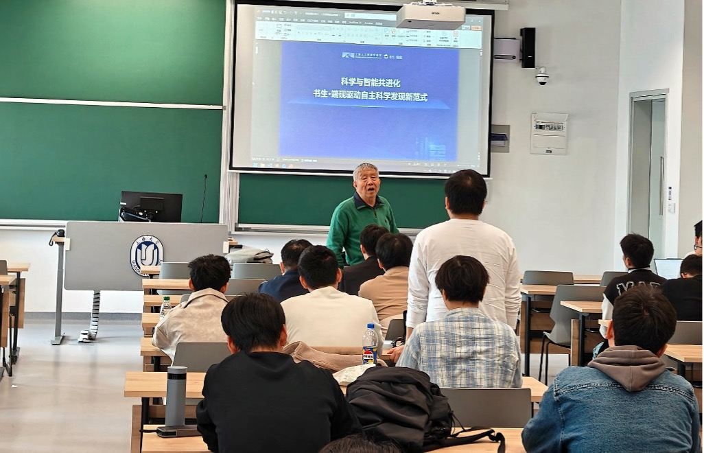

谁可以申请
可以申请
院系或二级机构
高校、科研机构所属单位
不予受理
课题组、实验室或个人
请由所属院系或二级机构统一申请
由负责人或经申请单位授权的教师、研究人员统一提交。申请人须负责获批账号及用户管理，并确保相关使用符合本计划的支持范围。
具体人数、指定功能及使用额度以审核结果为准，免费支持不等于无限量使用。
仅受理院系或二级机构统一申请，围绕真实的教学与科研需求开展。
高校、科研机构所属单位
请由所属院系或二级机构统一申请
由负责人或经申请单位授权的教师、研究人员统一提交。申请人须负责获批账号及用户管理，并确保相关使用符合本计划的支持范围。
审核通过后，申请单位可获得最多50名用户、自开通之日起3个月的免费使用支持，包含指定功能及相应使用额度。具体人数根据实际需求核定，功能范围、使用额度与起止时间将在获批后告知。
适用于课程教学、学生培养、学术研究、科研训练等非商业教育与科研活动。支持资格及账号仅限获批单位的授权用户使用，不得转售、转让，或用于对外提供商业服务。如有违反，干将团队可立即终止支持。
我们会宣传参与本计划的单位合作，分享教学与科研应用案例。具体公开的单位信息与案例内容，将与申请单位沟通确认，让更多人了解干将在真实场景中的使用。
免费支持到期后自动结束，不会自动转为付费服务。仍有需求的单位可在到期前申请续期，是否续期及支持范围，将结合使用情况和资源安排评估确定。
支持期届满或提前终止后，相关支持账户的积分将全部清零。
干将团队可根据实际情况，随时终止本计划或个别单位的支持。
由申请单位统一提交
请将申请信息发送至团队邮箱。我们将根据申请用途、单位需求及可用资源分批审核，并通过预留的联系方式反馈结果。
ganjiang@yzailab.com邮件按钮将打开你的邮件应用，请填写申请信息后自行发送。
欢迎符合条件的院系或二级机构申请，也期待你的使用建议，一起完善干将的教育支持服务。
干将团队
近日，香港科技大学（广州）材料表征与制备中央实验室（MCPF）与国创决策通用智能研究所达成合作意向。双方拟通过“干将教育支持计划”，为相关师生提供一定期限的免费使用权限，将面向粉末X射线衍射（PXRD）分析的科学智能体“干将”用于图谱解读、数据分析练习及科研训练。
材料表征与制备中央实验室（MCPF）是港科大（广州）专为先进材料合成与表征设立的中央研究平台，拥有约2500平方米的专用实验空间，为师生提供材料测试、分析及相关技术支持。在X射线分析领域，MCPF配备高通量粉末X射线衍射仪、多功能X射线衍射仪、台式粉末X射线衍射仪等设备，可为不同研究需求提供实验支持。
对于使用PXRD开展材料研究的师生而言，获得衍射图谱之后，还需要进一步识别物相、分析多相组成，并检验结构模型与实验数据是否相符。此次合作拟为相关师生提供干将的使用支持，使其能够结合实验数据，尝试运用科研智能体开展分析练习，学习理解工具给出的依据与结果。

“干将”是一款面向PXRD分析的科学智能体，由国创决策通用智能研究所曹斌博士带领团队研发。它将材料科学知识、专业算法与人工智能技术相结合，贯通物相识别、多相分解与结构精修等分析环节，支持用户核查分析依据、审阅分析结果。
在具体使用中，相关师生可从一份实验衍射图谱出发，借助干将进行物相识别和多相分析，再围绕候选物相与拟合结果开展讨论。例如，面对可能包含多种物相的样品，可比较不同候选物相组合及其拟合结果，结合样品信息与实验条件，判断哪一种解释更有依据。对于尚不能确定的结论，也可进一步梳理需要核查的信息。
对于正在学习衍射分析方法的学生，干将可作为数据解读练习中的辅助工具。学生可在使用过程中梳理分析步骤、比较不同方案，并说明判断依据，逐步理解物相识别、多相分析与结构精修之间的联系。教师也可结合具体图谱，组织学生讨论工具输出与实验信息是否相符，帮助其学习审阅分析结果。
对于已有科研任务的师生，干将可用于辅助解读相关衍射数据，为分析提供参考。工具给出的结果仍需结合样品情况、实验条件及专业判断进行审阅；分析结论是否成立，应回到相应的数据和依据加以核查。
本次拟提供的支持主要围绕干将的实际使用展开，使有需要的师生能够在获批期限与额度内，结合手头的衍射数据开展分析练习与科研训练。根据干将教育支持计划，符合条件并通过审核的单位，可获得以下支持：
具体支持对象、账号开通、功能范围、使用额度及起止时间，将根据实际需求与审核结果进一步明确。免费支持到期自动结束，不会自动转为付费服务；续期按计划规则另行申请。

上海大学查看详情近日，上海大学材料基因组工程研究院（MGI）与长三角国家技术创新中心通用决策智能研究所达成合作意向。双方拟依托上海大学研究生课程《AI智能体与科研实践》，将面向粉末X射线衍射分析的科学智能体“干将”（Gan Jiang）引入课程教学与科研训练，并通过“干将”教育支持计划，为师生提供免费使用资源，探索人工智能技术与材料科学教学深度融合的新模式。
此次合作既是上海大学推进“AI+材料”交叉学科建设的进一步探索，也是前沿科研智能体走进高校课堂、服务科研人才培养的具体实践。
《AI智能体与科研实践》是上海大学与上海人工智能实验室（浦江实验室）联合共建的研究生课程，依托书生系列国产大模型与“书生·端砚”科学发现平台，结合上海大学在人工智能赋能材料科学领域的科研成果，采用理论讲授与动手实践相结合的教学模式，培养学生利用人工智能解决真实科研问题的能力。
课程由中国科学院院士、上海大学材料基因组工程研究院院长张统一讲授开学第一课，上海大学熊杰助理研究员等负责教学，围绕大语言模型、科研智能体、工具调用、技能开发及多智能体协作等内容开展系统讲授与实践训练。课程拟引入通用决策智能研究所发布的“干将”XRD科学智能体，将垂域科研智能体的创新成果融入材料表征教学，引导学生在实际科研任务中理解人工智能与专业算法的结合方式。

“干将”是由通用决策智能研究所曹斌博士带领团队研发的科学智能体，面向粉末X射线衍射（PXRD）分析中的实际需求，将材料科学知识、专业分析算法与人工智能技术相结合，支持物相识别、多相分解、结构精修及分析结果核查等任务。
在课程实践中，双方拟围绕真实XRD实验数据开展案例教学和科研训练。学生可借助“干将”分析实验衍射图谱、识别候选物相、比较结构精修结果，并结合实验条件和材料科学知识，对智能体的分析依据与结果可靠性进行判断。同时，课程将结合智能体评测与综合实践，引导学生自主提出科学问题、设计分析任务、检验工具输出，理解科研智能体的能力边界，逐步培养专业知识与人工智能技术融合应用的能力。
为支持科研智能体在高校教学与科研训练中的应用，双方拟通过“干将”教育支持计划，为《AI智能体与科研实践》课程及相关学术培养活动提供免费使用支持，推动课堂学习与课后实践、科研训练相衔接。根据该计划，上海大学参与《AI智能体与科研实践》课程的师生将获得免费的科研智能体使用支持，具体包括：
此次合作进一步丰富了上海大学《AI智能体与科研实践》课程的教学资源与实践场景，将前沿科研智能体的技术成果引入研究生培养过程。未来，上海大学材料基因组工程研究院将与长三角国家技术创新中心通用决策智能研究所深化合作，依托课程教学和真实材料表征任务，探索科研智能体在材料分析、科研训练及人才培养中的应用，并通过学生实践反馈促进相关技术优化，推动人工智能技术、材料科学研究与研究生教育深度融合，为培养具有人工智能素养和跨学科创新能力的高层次人才提供有力支持。